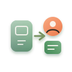
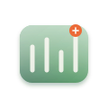
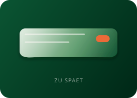

Partnerportale werden teurer und unzuverlässiger.
Wer schon aktiv sucht, sitzt auf ImmoScout, ImmoWelt und Co. Der Rest sieht Sie dort nicht. Objekt einstellen und warten ist kein planbarer Kanal mehr.
Für Wohnmakler ab 20 verkauften Immobilien im Jahr.
Unser Immo Sales System liefert Ihnen 15 qualifizierte Kaufanfragen exklusiv, vorgefiltert und sofort abgeholt — nur für Sie. Garantiert.
Wer schon aktiv sucht, sitzt auf ImmoScout, ImmoWelt und Co. Der Rest sieht Sie dort nicht. Objekt einstellen und warten ist kein planbarer Kanal mehr.
Zwei Tage später rufen Sie an, und der Interessent fragt, wer Sie sind und warum Sie anrufen. Auslastung bleibt Hoffnungsmarketing.
Solange Anfragen über Nacht liegen bleiben, kauft der zahlungskräftige Interessent beim Büro, das in Minuten antwortet — nicht bei Ihnen.

„Ich baue keine Immobilienfirma. Ich baue eine Medienfirma, die nebenbei Immobilien verkauft.“

2 Werbekampagne Der bisher unangetastete Markt in Ihrer Region: Menschen, die nicht den Tag auf den Portalen sitzen, sondern in den sozialen Medien.Backoffice-Case
rund 60 Stunden
Maklerbüros wie der Immobilienberatung Haller haben wir allein im Nachfassen und direkten Abholen von Kaufanfragen zuletzt rund 60 Stunden zurückgewonnen. Das ist kein Meta-Kampagnen-Beweis, sondern ein ehrlicher Backoffice-Fall.

Anfragen vorab geprüftFull Money Back
Unser Honorar tragen wir zu 100 %.
Nicht jede, deshalb filtern wir. Jede Anfrage wird in Minuten per WhatsApp abgeholt, ein Käuferprofil erstellt, und nur Qualifizierte landen in Ihrem CRM.
Umfang und Investition besprechen wir im Erstgespräch. Auf der Seite stehen bewusst keine Paketpreise.
Full Money Back: Liefern wir die 15 qualifizierten Kaufinteressenten in den ersten 6 Wochen nicht, bekommen Sie Ihr komplettes Honorar zurück.
Kurze Videos nach unserem Skript, Ihre Kriterien, die Termine selbst. Wenn Sie gar nicht vor die Kamera wollen, sagen wir es im Gespräch offen.
Ja — Propstack, onOffice, FlowFact & Co. Nur Qualifizierte landen dort, keine 32 Oberflächen und kein roter Lead-Stapel. Portale und Website bleiben. Die Kampagnen erreichen zusätzlich Menschen, die dort nicht den ganzen Tag suchen.
Für Wohnmakler ab etwa 20 verkauften Immobilien im Jahr, die die steigenden Portalpreise satt haben und nicht jeden Lead sofort abholen und nachfassen können.
Genau dafür ist das Gespräch da. Wenn Sie weg vom Hoffnungsmarketing und hin zu planbaren Kaufanfragen wollen, starten wir dort.
Im Vertriebsstrategiegespräch klären wir, ob das Immo Sales System zu Ihrem Markt passt — und wie Sie zu planbaren Kaufanfragen kommen.
Ohne Verpflichtung. Drei kurze Fragen, dann Termin.
Ein Klick genügt.
Grobe Zahl reicht.
Danach wählen Sie den Termin.
45 Minuten, kostenlos. Kontaktdaten direkt im Kalender.